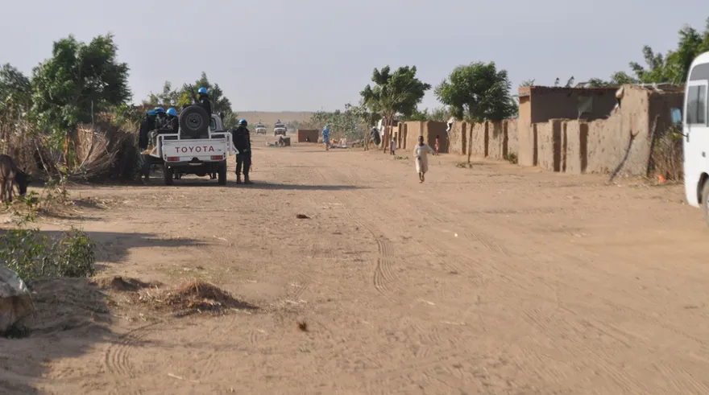

¿Qué está pasando en Sudán?
33,7 millonesde personas necesitan ayuda · OMS, febrero de 2026
Sudán lleva en guerra desde abril de 2023. Según el análisis de la OMS de febrero de 2026, 33,7 millones de personas necesitan ayuda. Millones han tenido que huir, dejando atrás hogares, trabajos y tierras. Muchas familias también tienen dificultades para conseguir agua segura y atención médica.


Profundizar en este capítulo
La guerra actual comenzó en abril de 2023. La OMS estimó que 33,7 millones de personas requerían asistencia humanitaria en 2026. Es una estimación nacional del análisis publicado en febrero de 2026. Desplazarse puede significar perder tierras, ingresos y acceso a mercados y servicios.
La formación describió el asentamiento de Al Salam, cerca de Kosti, donde las familias desplazadas organizaban actividades cotidianas pese a las carencias. El caso de Raya y su familia mostró la dificultad de llegar a un lugar seguro y conseguir atención nutricional. Se omiten detalles privados del relato.